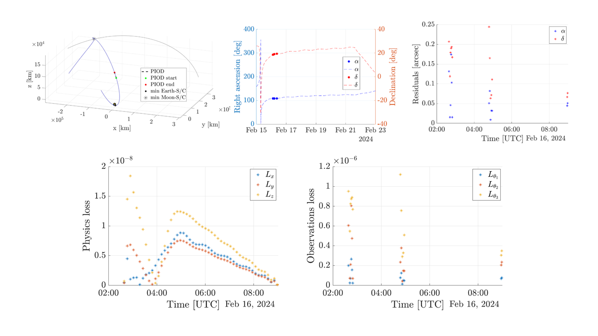
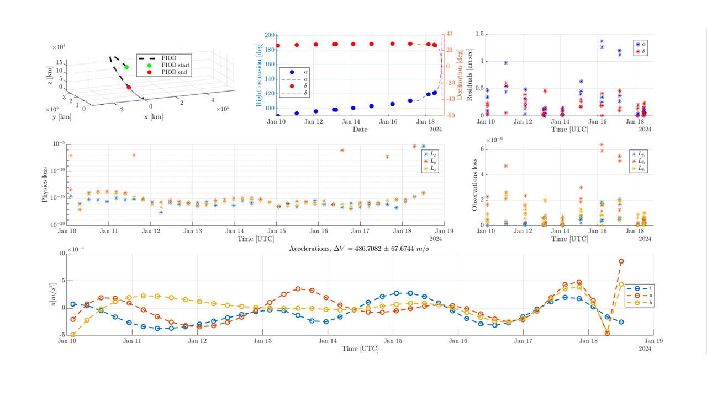
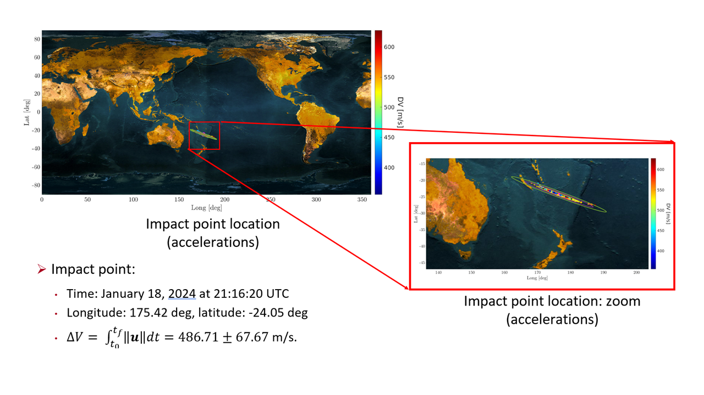

Physics-informed orbit determination
Physics-Informed Orbit Determination combines sparse angle-only observations with high-fidelity orbital dynamics to recover a trajectory without requiring an initial orbital guess or prior orbital information.
The model can include nonspherical Earth gravity, third-body perturbations, and solar-radiation pressure. Applications span GEO, X-GEO, and cislunar tracking, maneuver detection, and impact-point prediction while preserving physical consistency under limited observations.



